IBM Multicloud Manager - monitoring and event management
Author: Rafal Szypulka (rafal.szypulka@pl.ibm.com)
This chapter is focused on monitoring and event management features delivered by IBM Multicloud Manager 3.1.2.
- IBM Multicloud Manager - monitoring and event management
- Overall MCM dashboard
- MCM Application monitoring
- IBM Cloud Event Management for IBM Multicloud Manager
Overall MCM dashboard
IBM Multicloud Manager Overview dashboard is available from the MCM menu: Overview.
You can view details of your IBM Cloud Private clusters and other cloud service providers supported by IBM Cloud Private. You can also view details about your applications. The Overview dashboard is continuously refreshed in real time.
The following information about clusters is provided:
- Name of the cloud service with the number of clusters
- Cluster compliance
- Pod details
- Cluster status
- Cluster resources (VCPU/Memory usage)
- Storage usage
You can also view the information about each application and clusters where this application has been deployed:
- Number of clusters
- Number of Kubernetes types
- Number of regions
- Number of nodes
- Number of pods
The Overview page can be further personalized with the filtering feature. Click Filter results to specify what information is displayed on your page.
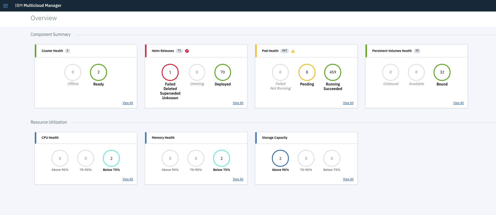
MCM Application monitoring
Metrics collection and visualization
Application dashboards are available from the MCM UI: Applications -> Launch Health View
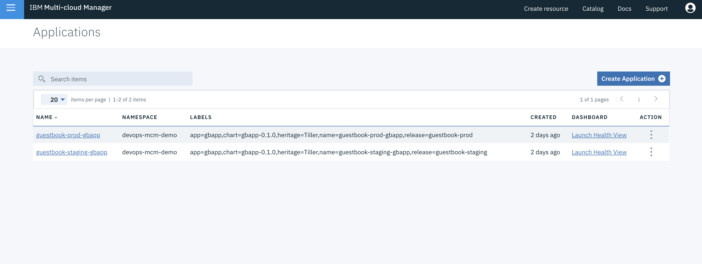
A Grafana Dashboard for MCM applications is generated automatically for each deployed application and shows metrics related to resource utilization (CPU, memory, network) of the application containers and overall resource utilization of the clusters where an application has been deployed.
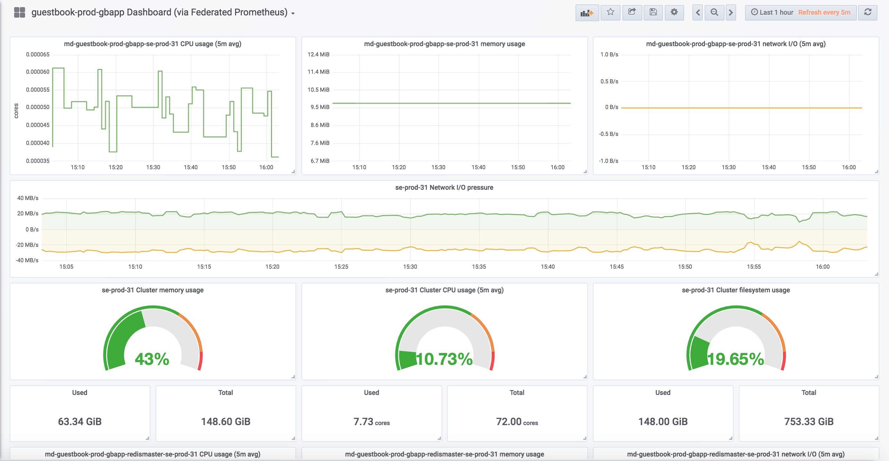
MCM federated Prometheus is a data source for an application monitoring dashboard. MCM Controller installation deploys a federated Prometheus instance which will pull selected metric data from the Prometheus instances located on managed ICP clusters.
Federated Prometheus deployment name: mcm-controller-ibm-mcm-prod-prometheus
Initially, just after MCM installation, the MCM federated Prometheus instance doesn't collect any data. Its configuration is generated dynamically during application deployment via MCM. Target ICP clusters are added to the MCM federated Prometheus instance ConfigMap during application deployment.
The example below shows a dynamic update of the MCM federated Prometheus ConfigMap after deployment of the application to three ICP clusters:
scrape_configs:
- job_name: mcm-dynamic-se-prod-312-ubuntu
honor_labels: true
params:
match[]:
- '{job="kubernetes-cadvisor"}'
scrape_interval: 1m
scrape_timeout: 30s
metrics_path: /apis/mcm.ibm.com/v1alpha1/namespaces/se-prod-312-ubuntu/clusterstatuses/se-prod-312-ubuntu/monitor/federate
scheme: https
static_configs:
- targets:
- kubernetes.default:443
labels:
cluster_name: se-prod-312-ubuntu
bearer_token_file: /var/run/secrets/kubernetes.io/serviceaccount/token
tls_config:
ca_file: /var/run/secrets/kubernetes.io/serviceaccount/ca.crt
insecure_skip_verify: false
- job_name: mcm-dynamic-se-stg-312-ubuntu
honor_labels: true
params:
match[]:
- '{job="kubernetes-cadvisor"}'
scrape_interval: 1m
scrape_timeout: 30s
metrics_path: /apis/mcm.ibm.com/v1alpha1/namespaces/se-stg-312-ubuntu/clusterstatuses/se-stg-312-ubuntu/monitor/federate
scheme: https
static_configs:
- targets:
- kubernetes.default:443
labels:
cluster_name: se-stg-312-ubuntu
bearer_token_file: /var/run/secrets/kubernetes.io/serviceaccount/token
tls_config:
ca_file: /var/run/secrets/kubernetes.io/serviceaccount/ca.crt
insecure_skip_verify: false
- job_name: mcm-dynamic-se-dev-312-ubuntu
honor_labels: true
params:
match[]:
- '{job="kubernetes-cadvisor"}'
scrape_interval: 1m
scrape_timeout: 30s
metrics_path: /apis/mcm.ibm.com/v1alpha1/namespaces/se-dev-312-ubuntu/clusterstatuses/se-dev-312-ubuntu/monitor/federate
scheme: https
static_configs:
- targets:
- kubernetes.default:443
labels:
cluster_name: se-dev-312-ubuntu
bearer_token_file: /var/run/secrets/kubernetes.io/serviceaccount/token
tls_config:
ca_file: /var/run/secrets/kubernetes.io/serviceaccount/ca.crt
insecure_skip_verify: false
In the example above, the generated configuration instructs MCM federated Prometheus instance to collect cAdvisor metrics from three child ICP Prometheus instances, located respectively on three ICP clusters: se-prod-312-ubuntu, se-stg-312-ubuntu and se-dev-312-ubuntu.
More information about Prometheus federation mechanisms: https://prometheus.io/docs/prometheus/latest/federation/.
IBM Cloud Event Management for IBM Multicloud Manager
IBM Cloud Event Management allows to set up a real-time incident management for the applications and infrastructure managed by the Multi Cloud Manager. Incidents are generated from events/alerts which indicate that something has happened on an application, service, or another monitored object. Cloud Event Management can receive events from various monitoring sources, either on premise or in the cloud.
In the MCM environment, the CEM collects alerts from Prometheus instances located at each managed cluster. The Cloud Event Management Controller for MCM(deployed using alerttargetcontroller helm chart) automatically configures managed Prometheus Alertmanager instances to send alert notifications to the central CEM instance installed on MCM Controller.
Installing the Cloud Event Management for IBM Multicloud Manager
The IBM Cloud Event Management for MCM is included inside IBM Multicloud Manager installation package. Unpack the MCM installation archive mcm-3.1.2.tgz and inside you will find two CEM PPA packages:
- Could Event Management Controller - alerttargetcontroller-ppa-0.0.2.tar.gz
- Cloud Event Management - cem-mcm-ppa-ibm-cem-2.2.0.tar.gz
Load both PPA packages to the local container registry on MCM hub cluster and alerttargetcontroller on every managed cluster.
docker login <MCM-cluster-hostname>:8500
cloudctl login -a https://<MCM-cluster-hostname>:8443 --skip-ssl-validation -n kube-system
cloudctl catalog load-archive -a <ppa-archive> --registry <MCM-cluster-hostname>:8500/kube-system
The following procedure describes installation and configuration steps on example ICP 3.1.2 cluster running MCM controller. The sequence of the steps is important.
Prerequisites
- MCM Controller and MCM Klusterlet deployed on MCM hub ICP 3.1.2 cluster and Kluesterlet deployed on managed ICP clusters.
- CEM PPA packages imported as per instructions above.
- CEM users have an
Administratorrole within a Team which has a resource management assigned to a managed cluster namespaces.
Installation of the Cloud Event Management controller
Deploy an alerttargetcontroller chart on both MCM hub cluster and managed clusters in the kube-system namespace.
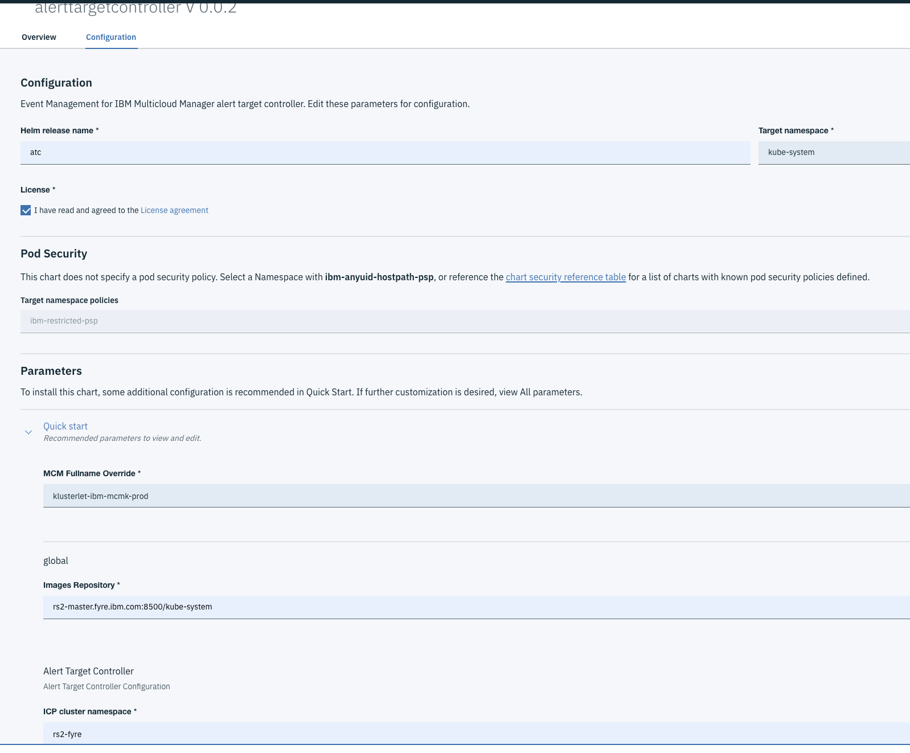
MCM Fullname Override option can be obtained using:
kubectl get po -n kube-system|grep klusterlet
Copy the pod name part before the klusterlet word (klusterlet-ibm-mcmk-prod on the example below):
# kubectl get po|grep klusterlet
klusterlet-ibm-mcmk-prod-klusterlet-657958f69f-v7cw9 3/3 Running 0 30h
klusterlet-ibm-mcmk-prod-weave-scope-49sxf 1/1 Running 0 30h
ICP Cluster namespace is the cluster namespace created during klusterlet deployment. In our case the namespace name is mcm-se-dev-31. It can be obtained using:
# kubectl get clusters --all-namespaces
NAMESPACE NAME ENDPOINTS STATUS AGE
rs3-fyre rs3-fyre rs3-master.fyre.ibm.com:8001 Ready 1d
rs4-fyre rs4-fyre rs4-master.fyre.ibm.com:8001 Ready 1d
After chart deployment, make sure the alerttargetcontroller pod is running.
# kubectl get pod -n kube-system|grep alerttarget
atc-alerttargetcontroller-alerttargetcontroller-77f87fb77cx6fph 1/1 Running 1 10h
Installation of the Cloud Event Management for IBM Multicloud Manager
Deploy ibm-cem chart you loaded together with CEM image to local-charts repository in the kube-system namespace on the MCM hub cluster.
CEM chart provided with
ibm-chartsrepository is aCommunity Editionversion which is not designed to work with MCM.
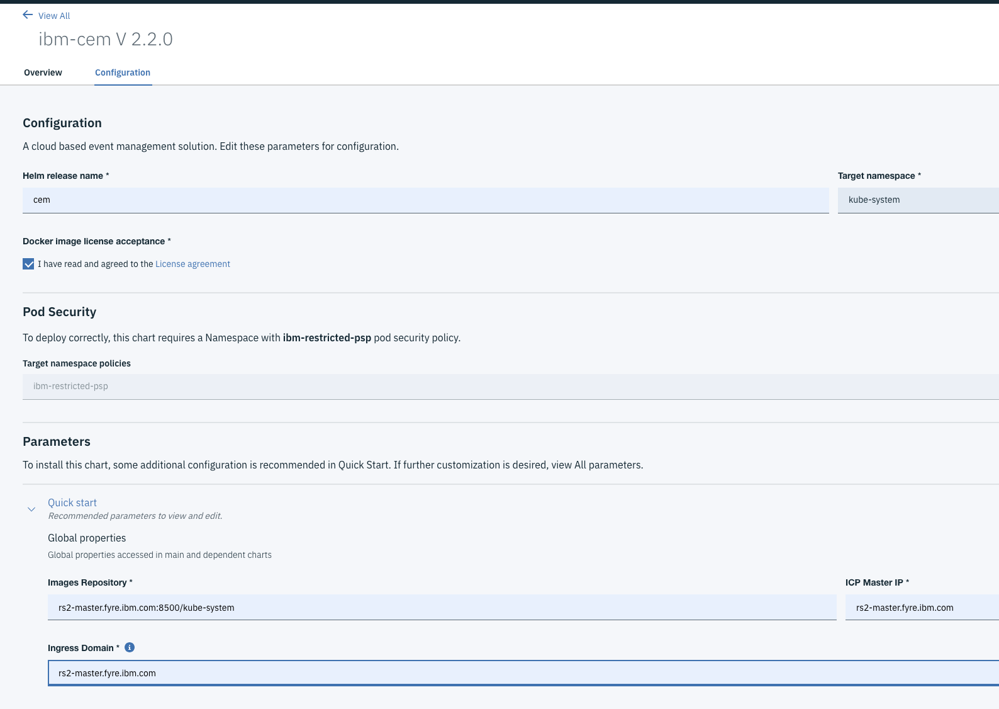
In our setup we used ICP UI console hostname for both ICP Master IP and Ingress Domain options.
After deployment, wait a couple of minutes until all CEM pods are started and run the following command to configure OIDC registration with IBM Cloud Private:
kubectl exec -n kube-system -t `kubectl get pods -l release=cem -n kube-system \
| grep "cem-ibm-cem-cem-users" | grep "Running" | head -n 1 \
| awk '{print $1}'` bash -- "/etc/oidc/oidc_reg.sh" "`echo $(kubectl get secret platform-oidc-credentials -o yaml -n kube-system \
| grep OAUTH2_CLIENT_REGISTRATION_SECRET: | awk '{print $2}')`"
Verify the alerttargets CRD has been created:
kubectl get alerttargets --all-namespaces
NAMESPACE NAME AGE
rs3-fyre rs3-fyre-rs3-fyre 2h
rs4-fyre rs4-fyre-rs4-fyre 2h
At this point the Alertmanager ConfigMaps for Prometheus instances located on managed clusters: monitoring-prometheus-alertmanager should be automatically updated by the alerttargetcontroller.
Verify it using:
kubectl get cm monitoring-prometheus-alertmanager -n kube-system -o yaml
in the route: -> routes: section you should see:
- receiver: cemwebhook
group_by:
- alertname
- instance
- severity
continue: true
group_wait: 10s
group_interval: 10s
repeat_interval: 1m
and in the receivers: section you should see:
- name: cemwebhook
webhook_configs:
- send_resolved: true
http_config:
tls_config:
insecure_skip_verify: true
url: https://rs4-master.fyre.ibm.com:8443/norml/webhook/prometheus/cem-1/695c8db7-344c-4af7-84f3-10f99eab440a/Snfok7F3_0ndxxxxxx762ZWnsMmnPtnLG69ID_rzctg
Note, the CEM url: will be different in your environment.
The CEM Alert Target Controller adds a couple of sample alert definitions to the AlertRules CRD. This can be verified using:
# kubectl get alertrules
NAME ENABLED AGE CHART RELEASE ERRORS
cem-alert-rules true 2h
(...)
These alert rules can be customized to the local requirements. We recommend to consider our best practice alert definitions for ICP platform.
Check the Prometheus Alertmanager logs to verify if there are no errors during sending webhook notifications to CEM.
kubectl logs <alertmanager pod> -n kube-system
User management
CEM console access is managed through ICP TeamsCreate an ICP Team on MCM hub cluster. Assign role Administrator to the users in the Team and add managed clusters namespaces as Managed Resources.
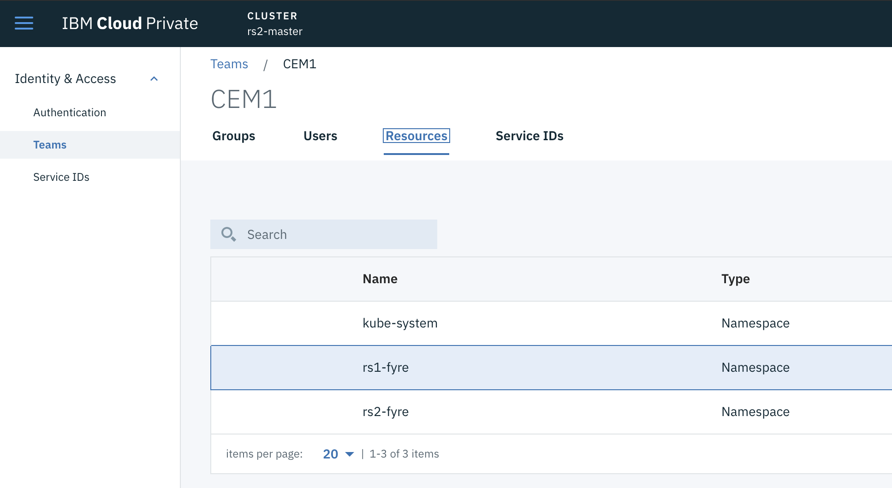
First logon to the CEM console
Cloud Event Management console can be accessed from the Multicloud Manager console. Logon to MCM UI as one of the Team (mentioned in the User Management chapter) members and select Event Management.
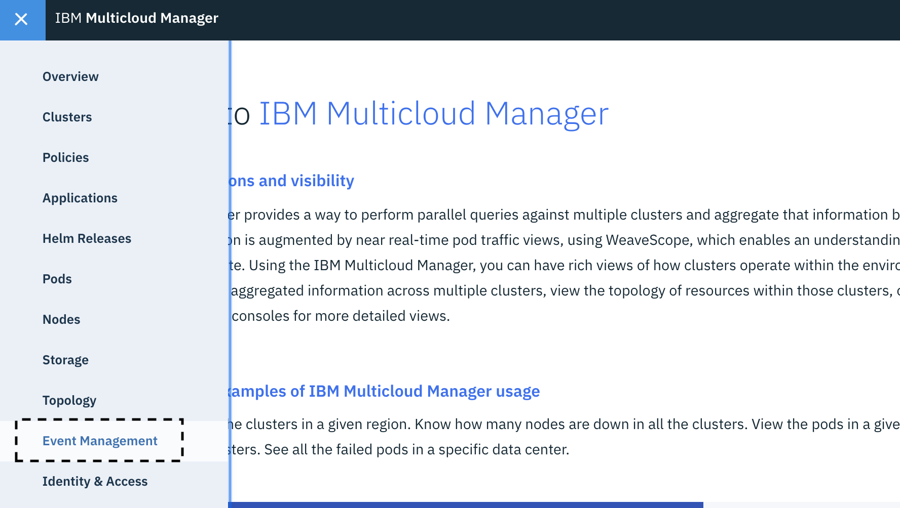
You may be asked to authenticate again with the ICP user and you should see one or more subscriptions.
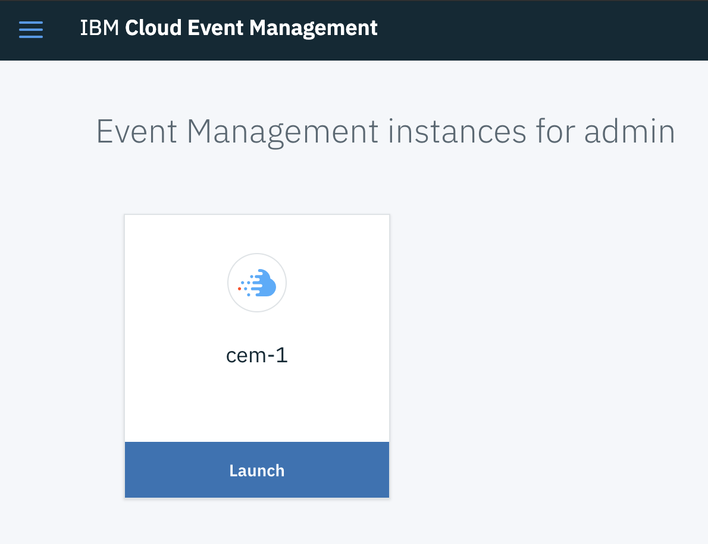
Example subscription cem-1 on the picture above is a name of the ICP Team authorized to manage a cluster namespace.
Click Launch and then Go to my Incidents. If some defined Prometheus alerts are active (you can verify it via Prometheus Alertmanager UI available from the ICP console Platform -> Alerting), you should see incidents in CEM UI:
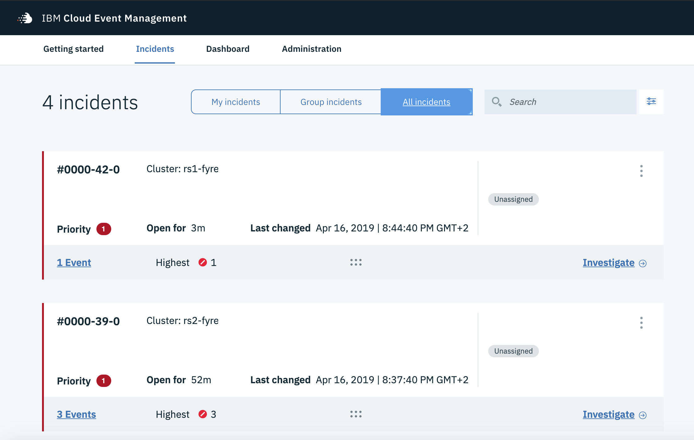
Drill down to the Event list of selected Incident to see Prometheus alert details:
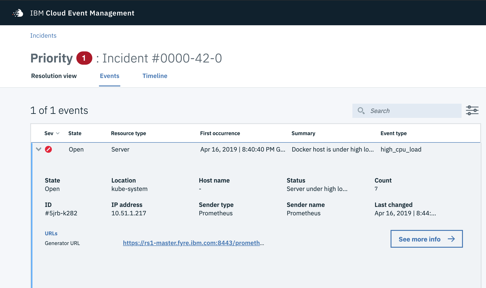
Click on the Generator URL link to open the Prometheus UI on the managed cluster and see current result of the PromQL query that generated this alert:
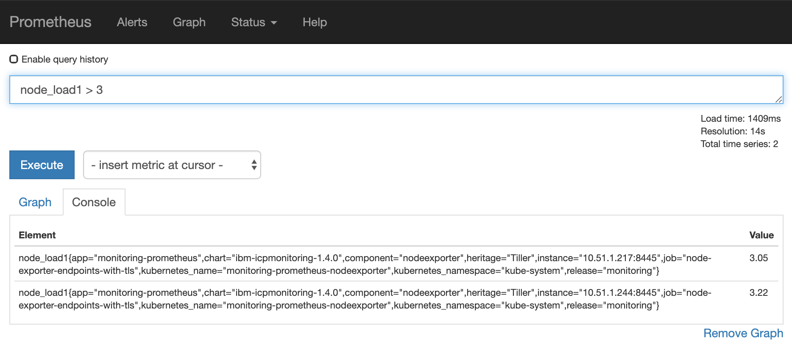
Cloud Event Management documentation
More information about how to operate and use the Cloud Event Management: Cloud Event Management documentation.